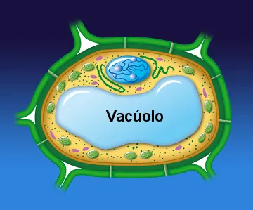

O vacúolo é uma organela grande e cheia de fluido, presente principalmente nas células vegetais. Ele desempenha diversas funções, como armazenamento de água, sais minerais, açúcares e pigmentos. Os vacúolos ajudam a manter a turgidez da célula, que é essencial para a rigidez da planta.

Além de armazenar substâncias, os vacúolos também estão envolvidos na degradação de resíduos celulares e na defesa contra patógenos. Em algumas plantas, vacúolos podem armazenar compostos químicos que são benéficos ou prejudiciais a herbívoros, funcionando assim como uma estratégia de defesa natural.